Reliable Autonomy for
Human-Cyber-Physical Systems
NSF CPS PI Meeting Mini-Workshop
November 14, 2017
Key Facts
- Workshop Date
- 8:30-10:30 AM, November 14, 2017
- Workshop Location
- Beech [Lower Level]
- Contact Information
- dorsa@cs.stanford.edu
Overview of Workshop
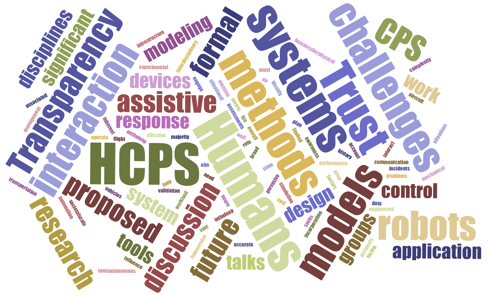While the vast majority of methods and tools in cyber-physical systems (CPS) have been developed for fully autonomous systems, most engineered systems operate with a human on-the-loop, if not in-the-loop. A pervasive history of incidents and accidents in aircraft flight management systems, air traffic control, automobile systems, biomedical systems and devices, and other application domains attest to the unaddressed challenges inherent in the design of human-cyber-physical systems (HCPS). Transparency, trust, situational awareness, workload, and other factors have significant influence on overall system performance when humans interact with automation.
Methods and tools for design of HCPS must account for the complexity of the human response, as well as challenges associated with accurate assessments of human state, incorporation of biometric data into the control loop, and effective communication and collaboration with the human. Interdisciplinary challenges arise in the need for modeling, simulation, and experimental validation.
This workshop seeks to envision the future of HCPS research. We aim to identify the most relevant challenges facing cyber-physical system researchers in HCPS, including (but not limited to) problems in human-robot interaction, societal-scale infrastructure, semi-autonomous vehicles and transportation systems, and neuro or mechanical assistive devices.
Workshop Format
The workshop format exploits interactive elements. After a brief introduction, invited speakers will give brief, 3-minute talks on their vision for the most significant research problems in HCPS. Participants will then break into small groups to discuss a series of open-ended questions. After re-joining, groups will quickly summarize novel findings to all participants, and organizers will provide concluding remarks.
Discussion Groups
Humans and Robots will focus on questions motivated by problems in human-robot interaction, collaboration, and communication, neuromechanical systems, assistive and rehabilitative robotics, teleoperation, and neurological and biomedical modeling.
Humans and Methods will focus on questions motivated by problems in verification and control, including extension of formal methods to HCPS, synthesis of controllers for human-on-the-loop systems, and collaborative and shared control.
Humans and Models will focus on questions motivated by problems in interface design, behavioral modeling, cognitive modeling, and large-scale simulation of realistic human behavior.
Tentative Schedule
| 08:30 AM - 08:40 AM | Workshop Introduction |
| 08:40 AM - 09:15 AM | Speed Talks on Research Problems in HCPS |
| 09:15 AM - 10:15 AM | Guided Small Group Discussions |
| 10:15 AM - 10:35 AM | Read-out from Groups |
| 10:35 AM - 10:45 AM | Concluding Remarks |
Invited Speakers
-
Nisar Ahmed
Nisar Ahmed is an Assistant Professor of Aerospace Engineering Science at the University of Colorado Boulder, where he directs the Cooperative Human-Robot Intelligence (COHRINT) Laboratory and is a member of the Research and Engineering Center for Unmanned Vehicles (RECUV). His research interests are in modeling, intelligent control, and information fusion for dynamical systems featuring human-autonomous robot interaction and heterogeneous sensor networks. He completed his Ph.D. in Mechanical Engineering at Cornell University in 2012 and from 2012-2014 was a postdoctoral research associate in the Cornell Autonomous Systems Lab (ASL). He received the ASEE Air Force Summer Faculty Fellowship in 2014, and has organized several workshops, including the RSS 2014 Workshop on Distributed Control and Estimation for Robotic Vehicle Networks and the AAAI 2015 Fall Symposium on Self-Confidence in Autonomous Systems. He is a member of IEEE and an Associate Member of the American Institute of Aeronautics and Astronautics (AIAA) Intelligent Systems Technical Committee.
-
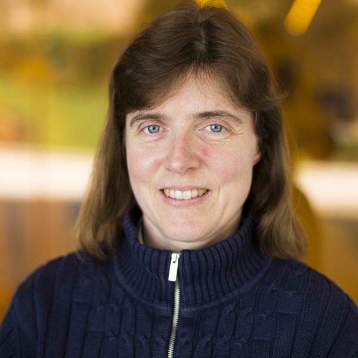
Ella Atkins
Dr. Ella Atkins is a Professor in the Department of Aerospace Engineering at the University of Michigan, where she is director of the Autonomous Aerospace Systems (A2SYS) Lab and Associate Director of Graduate Programs for the Robotics Institute. Dr. Atkins holds B.S. and M.S. degrees in Aeronautics and Astronautics from MIT and M.S. and Ph.D. degrees in Computer Science and Engineering from the University of Michigan. She previously served on the Aerospace Engineering faculty at the University of Maryland, College Park. Dr. Atkins is past-chair ofthe AIAA Intelligent Systems Technical Committee, AIAA Associate Fellow, IEEE senior member, small public airport owner/operator (Shamrock Field, Brooklyn, MI), private pilot (Aircraft Single Engine Land), and holds a Part 107 UAS certificate. She served on the National Academy’s Aeronautics and Space Engineering Board (ASEB) (2011-2015 term), the Institute for Defense Analysis Defense Science Studies Group (DSSG) (2012-2013), and an NRC committee to develop an autonomy research agenda for civil aviation (2013-2014). Dr. Atkins has established a long-term research program in decision-making and control to assure safe contingency management in manned and unmanned air and space applications.
-
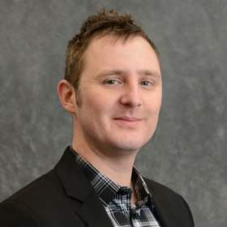
Matthew Bolton
Dr. Bolton is an Assistant Professor of Industrial and Systems Engineering at the University at Buffalo (UB). He obtained his Ph.D. in Systems Engineering (with distinction) from the University of Virginia, Charlottesville, in 2010. Before joining UB, he worked as a Senior Research Associate at NASA’s Ames Research Center through the San Jose State University Research Foundation and as an Assistant Professor of Industrial Engineering and Computer Science at the University of Illinois at Chicago. Dr. Bolton’s research predominantly focuses on the use of formal methods in human factors engineering. He has published widely on the use of mathematical modeling and proof techniques to find problems in complex systems that rely on human interaction in many safety-critical domains. This includes aerospace, medicine, defense, and security. Dr. Bolton has received funding on related projects sponsored by the European Space Agency, the National Science Foundation, the NASA Ames Research Center, the Agency for Healthcare Research and Quality, and the Army Research Office (through a Young Investigator Program Award).
-
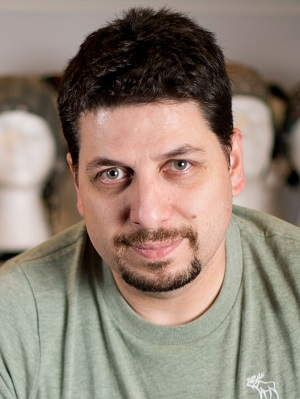
Deniz Erdogmus
Deniz Erdogmus received BS (1997) in EE and Mathematics, and MS (1999) in EE from the Middle East Technical University in Turkey; PhD (2002) in ECE from the University of Florida; where he conducted postdoctoral research until 2004. He was with CSEE and BME Departments at the Oregon Health and Science University until 2008 since then he has been with the ECE Department at Northeastern University. His research focuses on statistical signal processing and machine learning with applications to contextual signal/image/data analysis with applications in cyberhuman systems including brain computer interfaces and technologies that collaboratively improve human performance. He received the 2003 Young Author Best Paper Award from IEEE-SPS and his students have been winner (2005) and finalist (2006) of the ICASSP Best Student Paper Award. He has served as an Associate Editor for journals including IEEE Signal Processing Letters (two distinct terms), Transactions on Image Processing, Signal Processing, Biomedical Engineering, and Neural Networks. He also served as program and technical chair in IEEE SPS conferences, most recently as General Chair for MLSP 2015. He has been a member of IEEE SPS Technical Committees for MLSP (2003-2009; 2017-present) and BISP (2009-present).
-
Lu Feng
Lu Feng is an Assistant Professor at the Department of Computer Science and Department of Systems and Information Engineering at the University of Virginia. Previously, she was a postdoctoral fellow at the University of Pennsylvania and obtained her PhD in Computer Science from the University of Oxford. Her research focuses on assuring the safety of cyber-physical systems, drawing on formal methods, machine learning and human factors. Example applications include human-in-the-loop planning for autonomous vehicles, and Type 1 Diabetes patients behavior modeling and analysis.
-
Deepak Gopinath
Deepak is a doctoral student in the Mechanical Engineering Department at the Northwestern University. He completed his B.Tech in Engineering Physics from IIT Bombay in 2003, after which he moved to Boston, USA to pursue a Professional Diploma in Music, at Berklee College of Music majoring in Composition and Jazz Performance. Prior to coming to Northwestern, he pursued a Master’s in Music Technology at Georgia Tech under Dr. Gil Weinberg where he worked in the field of Robotic Musicianship. His current interests are in robotic manipulation and shared autonomy in assistive, rehabilitation and augmentation robotics.
-
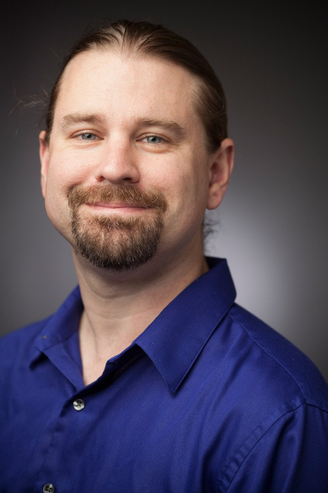
Ross Knepper
Ross A. Knepper has been an Assistant Professor in the Department of Computer Science at Cornell University since 2014. His research focuses on the theory and algorithms of human-robot interaction in collaborative work. He builds systems to perform complex tasks where partnering a human and robot together is advantageous for both, such as factory assembly or home chores. Ross has built robot systems that can assemble Ikea furniture, ask for help when something goes wrong, and interpret informal speech and gesture commands. Before Cornell, Ross was a Research Scientist at MIT. He received his M.S and Ph.D. degrees in Robotics from Carnegie Mellon University in 2007 and 2011.
-
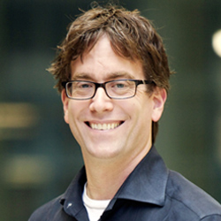
Todd Murphey
Dr. Todd D. Murphey is a Professor of Mechanical Engineering at Northwestern University. He received his B.S. degree in mathematics from the University of Arizona and the Ph.D. degree in Control and Dynamical Systems from the California Institute of Technology. His laboratory is part of the Neuroscience and Robotics Laboratory, and his research interests include computational methods for mechanics and real-time optimal control, physical networks, and information theory in physical systems. Honors include the National Science Foundation CAREER award in 2006, membership in the 2014-2015 DARPA/IDA Defense Science Study Group, and Northwestern's Charles Deering McCormick Professorship of Teaching Excellence. He is a Senior Editor of the IEEE Transactions on Robotics.
-
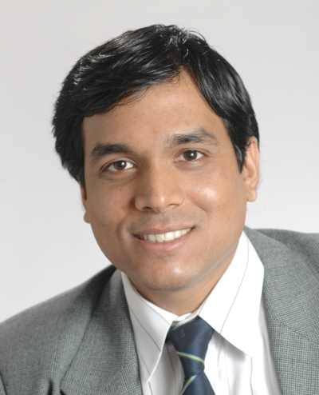
Sanjit Seshia
Sanjit A. Seshia is a Professor in the Department of Electrical Engineering and Computer Sciences at the University of California, Berkeley. He received an M.S. and Ph.D. in Computer Science from Carnegie Mellon University, and a B.Tech. in Computer Science and Engineering from the Indian Institute of Technology, Bombay. His research interests are in dependable computing and computational logic, with a current focus on applying automated formal methods to problems in cyber-physical systems, computer security, electronic design automation, and synthetic biology. His Ph.D. thesis work on the UCLID verifier and decision procedure helped pioneer the area of satisfiability modulo theories (SMT) and SMT-based verification. He is co-author of a widely-used textbook on embedded, cyber-physical systems and has led the development of technologies for cyber-physical systems education based on formal methods. His awards and honors include a Presidential Early Career Award for Scientists and Engineers (PECASE), an Alfred P. Sloan Research Fellowship, the Frederick Emmons Terman Award for contributions to electrical engineering and computer science education, the Donald O. Pederson Best Paper Award for the IEEE Transactions on CAD, and the School of Computer Science Distinguished Dissertation Award at Carnegie Mellon University.
-
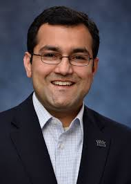
Nitin Sharma
Nitin Sharma received the B.E. degree in industrial engineering from Thapar University, India, in 2004, and the M.S. degree and the Ph.D. degree in mechanical engineering from the Department of Mechanical and Aerospace Engineering, University of Florida, Gainesville, in 2008 and 2010, respectively. He was an Alberta Innovates-Health Solutions Post-Doctoral Fellow with the Department of Physiology, University of Alberta, Edmonton, Canada. Since 2012, he has been an Assistant Professor with the Department of Mechanical Engineering and Materials Science, University of Pittsburgh. His research interests include the modeling, optimization, and control of functional electrical stimulation-elicited walking. His current research in hybrid exoskeletons is funded by three NSF awards and one NIH R03 Award.
-
Tapomayukh Bhattacharjee
Tapomayukh "Tapo" Bhattacharjee is a postdoctoral research associate in Computer Science \& Engineering at the University of Washington, working with Professor Siddhartha Srinivasa in the Personal Robotics Lab. He completed his Ph.D. in Robotics from Georgia Tech under the supervision of Professor Charlie Kemp. His primary research interests are in the fields of haptic perception, machine learning, manipulation and human-robot interaction. He believes in the potential of using multimodal haptic signals to enhance robot manipulation capabilities in unstructured environments as well as around humans. He aims to achieve this by inferring relevant properties of the world using physics-based and data-driven methods.
Organizers
-
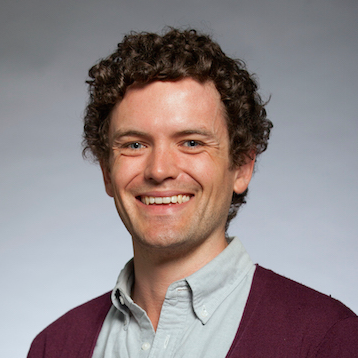
Sam Burden
Sam Burden earned his BS with Honors in Electrical Engineering from the University of Washington in Seattle in 2008. He earned his PhD in Electrical Engineering and Computer Sciences from the University of California in Berkeley in 2014, where he subsequently spent one year as a Postdoctoral Scholar. In 2015, he returned to UW EE as an Assistant Professor; in 2016, he received a Young Investigator award from the Army Research Office (ARO-YIP). Sam is broadly interested in discovering and formalizing principles of sensorimotor control. Specifically, he focuses on applications in dynamic and dexterous robotics, neuromechanical motor control, and human-cyber-physical systems. In his spare time, he teaches robotics to students of all ages in classrooms and campus events.
-
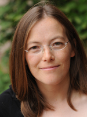
Meeko Oishi
Meeko Oishi is an Associate Professor of Electrical and Computer Engineering at the University of New Mexico. She received the PhD (2004) and MS (2000) in Mechanical Engineering from Stanford University, and a BSE in Mechanical Engineering from Princeton University (1998). Her research interests include hybrid dynamical systems, control of human-in-the-loop systems, reachability analysis, and modeling of motor performance and control in Parkinson’s disease. She previously held a faculty position at the University of British Columbia at Vancouver. She is the recipient of the NSF CAREER Award, the UNM Regents' Lecturer Award, and the George Bienkowski Memorial Prize, Princeton University. She was a Summer Faculty Fellow at AFRL Space Vehicles Directorate, 2013-2015.
-

Dorsa Sadigh
Dorsa Sadigh is a new Assistant Professor in Computer Science and Electrical Engineering at Stanford University. Her research interests lie in the intersection of robotics, control theory, formal methods, and human-robot interaction. Specifically, she works on developing efficient algorithms for safe and interactive human-robot systems such as semiautonomous driving. Dorsa has received her doctoral degree in Electrical Engineering and Computer Sciences (EECS) at UC Berkeley in 2017, and has received her bachelor’s degree in EECS at UC Berkeley in 2012.
-
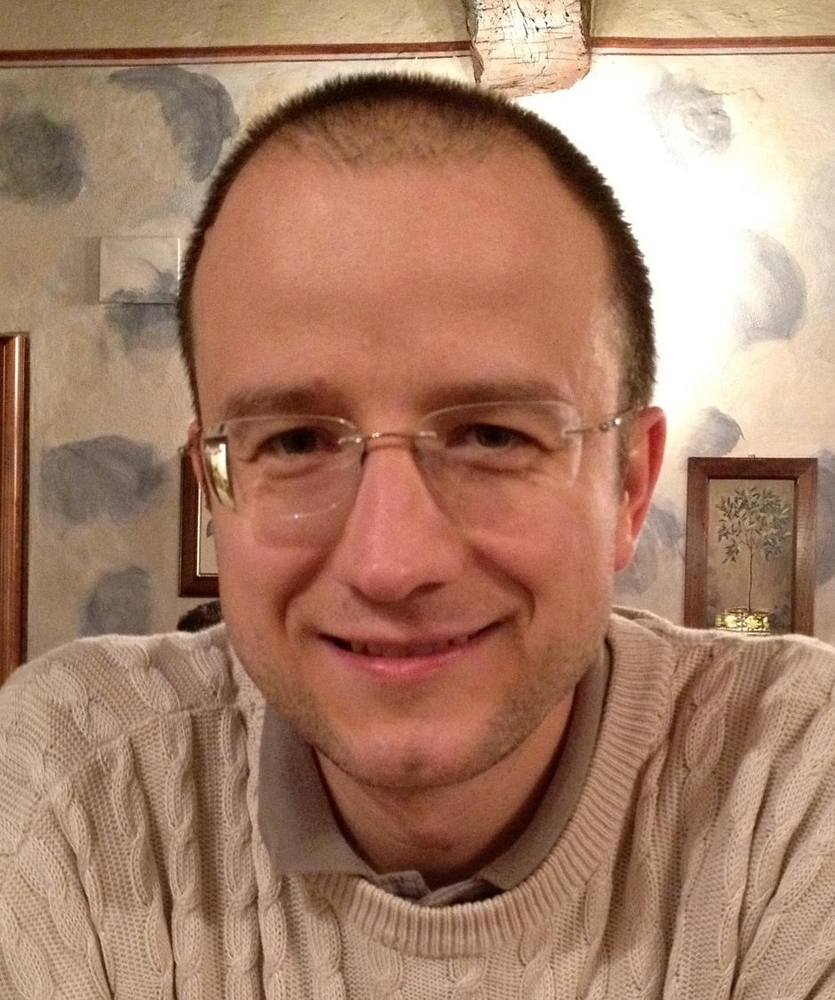
Ufuk Topcu
Ufuk Topcu joined the Department of Aerospace Engineering at the University of Texas at Austin as an Assistant Professor in Fall 2015. He received his Ph.D. degree from the University of California at Berkeley in 2008. He held research positions at the University of Pennsylvania and California Institute of Technology. His research focuses on the theoretical, algorithmic and computational aspects of design and verification of autonomous systems through novel connections between formal methods, learning theory and controls.